MIAMI
미국 플로리다주에 있는 도시이며 아름다운 해안이 있어 휴양지로
유명한 곳이다. 플로리다반도 남동부, 비스케인만 연안에 있는
대마이애미(Greater Miami)는 플로리다 남부지역의 '황금해안'을 이룬다.
1910-1920
19세기 철도의 발달로 가까운 바닷가로 이동이 쉬워졌고, 그로인해 해수욕의
발달이 잇달아 이루어졌습니다. 이렇게 실루엣이 전혀 드러나지 않던 수영복은
1910년대에 들어서면서 점차 여성의 몸매가 드러나는 수영복으로 발전했습니다.
지금의 실내수영복의 모태가 된 수영복이 바로 이 사진속의 1910년대에 만들어진
수영복이 아닐까싶습니다. 소매는 물론 기장까지 확연하게 짧아졌습니다.
1920년대의 수영복 풍경을 보면 의아하게도 경찰이
여성의 수영복 길이를 재고있습니다. 노출이 지금처럼
대중화되지 않았던 1920년대에는 이렇게 해변에
수영복 경찰이 있었습니다.
1930-1940
1930년대의 수영복은 조금 더 여성스러운
라인을 선보이고 있습니다. 백스타일도 X형,
U형 등 지금의 실내수영복과 많이
닮아있습니다.
1940년대는 투피스로 된 수영복이 출시
되었던 시기입니다. 2차 세계대전부터
입게되었다는 비키니는 1946년 프랑스
디자이너 루이레아르가 최초로출시했습니다.
세계대전으로 물자가 부족했던 당시,
원피스 수영복보다는 천이 더 적게 드는
비키니를 출시했다고 합니다. 비키니라는
이름은 루이레아르가 당시 원자폭탄
핵실험자였던 태평양의 비키니라는
산호섬으로부터 따왔다고 합니다.
1950-1990
하지만 오늘날처럼 비키니 수영복이 유행하기까지는
수많은 시간이 걸렸습니다. 너무 선정적인 디자인
때문이었습니다. 그 후, 오랜 세월동안 다양한 디자인을
거쳐 오늘날의 다양한 비키니 수영복이 되었다고 합니다.
지금처럼 원피스, 비키니 가릴것 없이 유행하기에 앞서
1990년대에는 모노키니가 유행하였습니다. 모노키니
중에서도 섹시한 라이프가드를 연상케하고, 다리가
길어보이는 하이컷의 모노키니 수영복을 많이 입었습니다.
2000-2019
19현재 해변에서 가장 많이 볼 수 있는 비키니 수영복의 모습입니다. 실내수영장에서는 1990년대에 유행했던
원피스 형태의 수영복을 가장 많이 볼 수 있으며, 요즘 시대의 비키니
트렌드는 꼭 정해진 틀에비키니와 비키니 디자인이 아닌 캐주얼 하고, 편안하면서 자신의 개성을 살릴 수
있는 다양한 디자인들이 많이 나오고 있습니다. 그리고 뉴트로가 유행인 만큼 비키니
또한 원색의 비키니 혹은과거의 모노키니의 디자인을 많이
나타내고 있습니다. 오늘날의 수영복이 되기까지 기술적, 디자인 변화가 있었습니다.
그 속에서 그 시대의 환경과 분위기를 알 수 있습니다.
 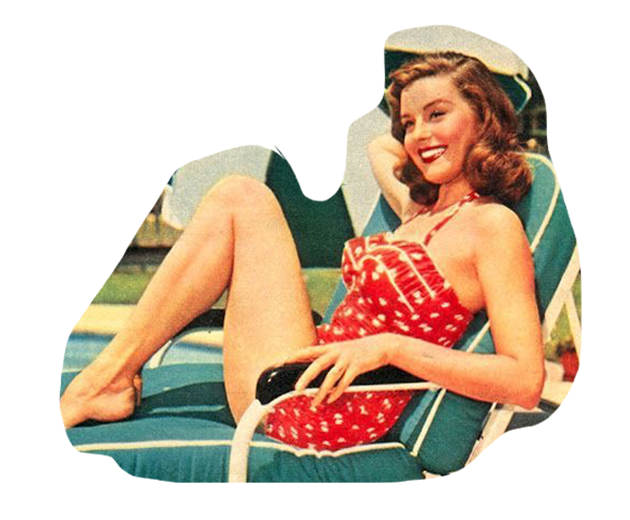
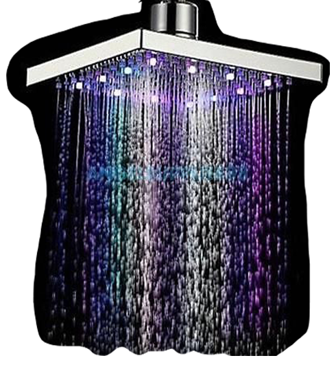
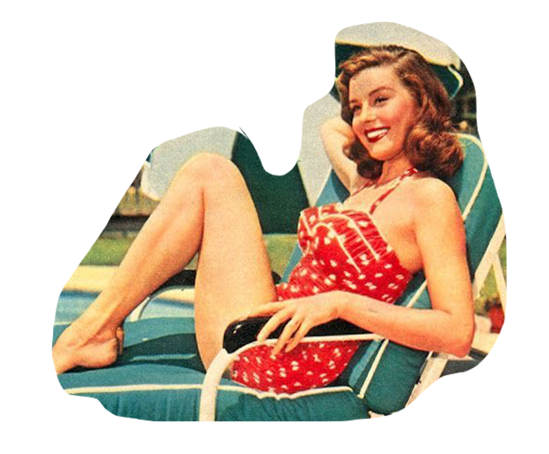
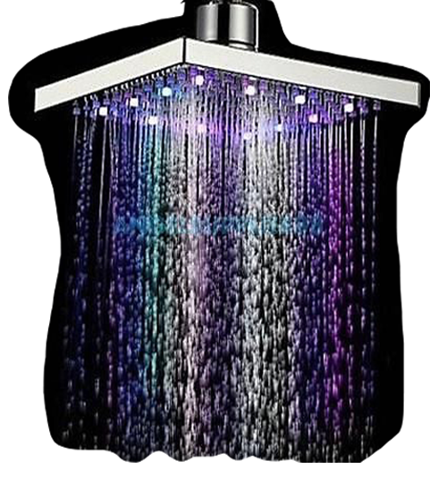
 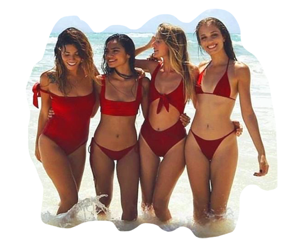
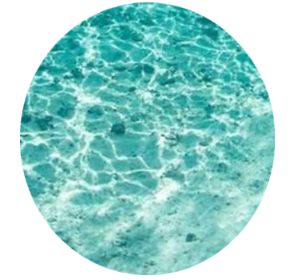
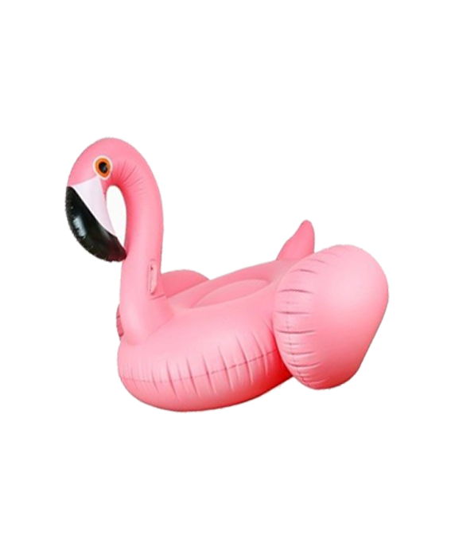
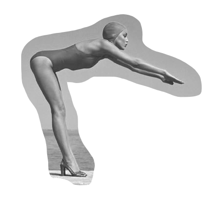
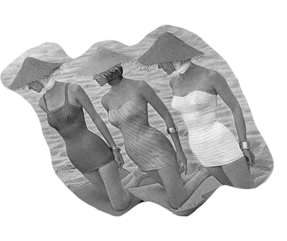
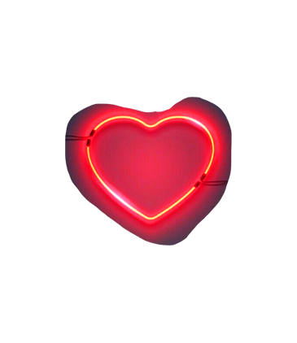
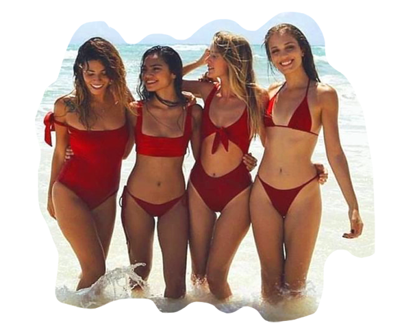
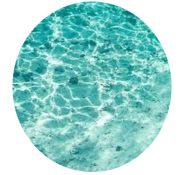
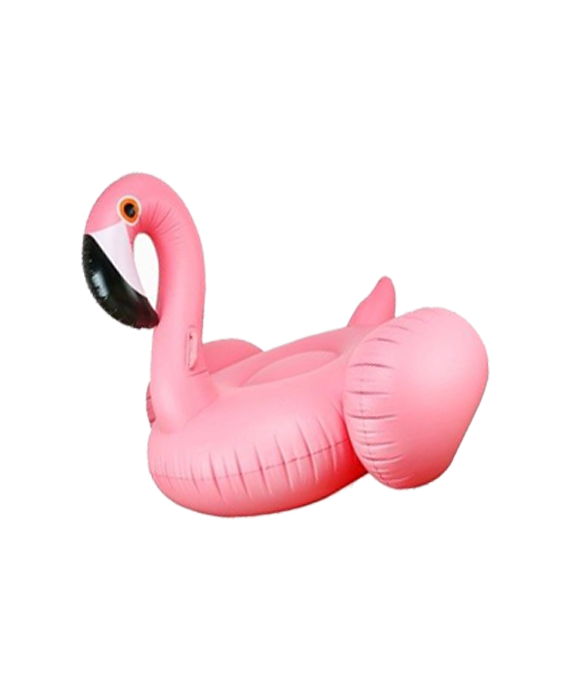
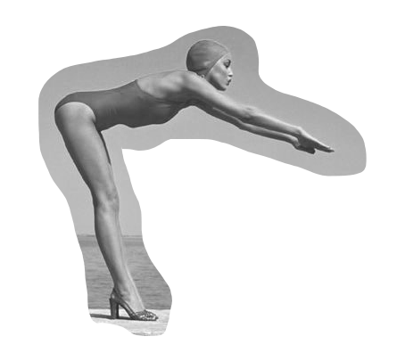
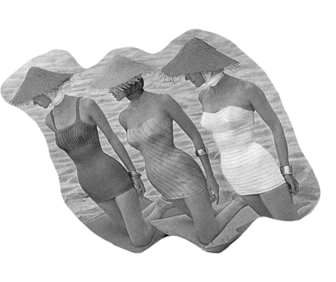
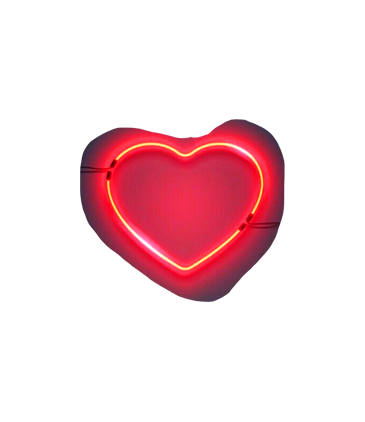